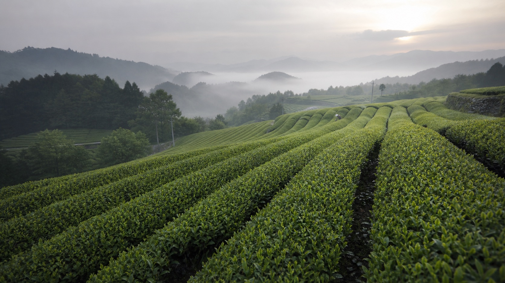
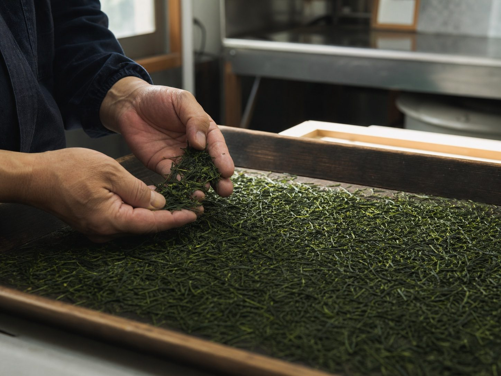

01
Product use商品用途
Retail tea, café beverages, foodservice or product development.小売用、カフェドリンク、外食、商品開発など。
MASTRY LLC is a Japan-based beverage company and matcha trading partner. We work with a network of tea producers and farm owners in Japan to connect overseas buyers with matcha suited to their product and commercial requirements.
MASTRY合同会社は、日本を拠点とする飲料会社であり、抹茶のトレーディングパートナーです。日本各地の茶生産者・農園とのネットワークを生かし、海外のバイヤーへ商品用途や取引条件に合った日本産抹茶をご提案します。



Images illustrate Japanese tea cultivation and our sourcing evaluation context; producer-specific information is shared as part of each inquiry.写真は日本茶の栽培および調達評価の背景を示すイメージです。個別の生産者情報は、お問い合わせ内容に応じてご案内します。
We begin with how the matcha will be used and what matters commercially. That allows us to discuss relevant producers and options without making assumptions about certifications, pricing or capacity.
まず、抹茶の用途と商流上の条件を整理します。認証、価格、供給量を一方的に決めつけず、要件に応じて関連する生産者や選択肢をご相談します。
Retail tea, café beverages, foodservice or product development.小売用、カフェドリンク、外食、商品開発など。
Grade, origin, sensory direction and format required for evaluation.グレード、産地、味わいの方向性、必要な荷姿。
Target volume, timing and the documentation your team needs to review.想定数量、時期、社内確認に必要な情報。
We coordinate each discussion around the buyer's actual needs. Samples and supplier details are discussed where relevant to the inquiry.
バイヤーの実際の要件に沿って、各段階を調整します。サンプルや供給者情報は、お問い合わせ内容に応じてご相談します。
Tell us the intended use, preferred profile, volume and schedule.用途、希望する特徴、数量、時期をお知らせください。
We discuss relevant sourcing options through our producer network.生産者ネットワークを通じて、関連する調達候補をご相談します。
Review available samples, supplier details and commercial terms.可能なサンプル、供給者情報、取引条件を確認します。
For cafés, specialty tea brands, retailers, foodservice partners and product developers seeking Japanese matcha.
日本産抹茶をお探しのカフェ、茶専門ブランド、小売、外食事業者、商品開発担当者の皆さまへ。